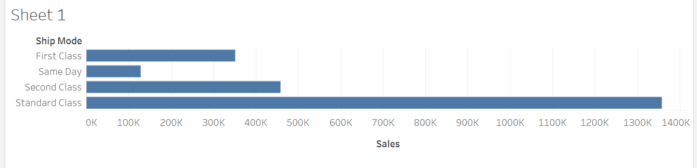

Noora's Data Visualization Lab 4.1
Sales Distribution Across States

My Take: Sales patterns seem closely tied to state population sizes. Higher-population states like California and Texas naturally have more sales activity, but states with fewer sales, like Kansas and South Dakota, may still hold untapped potential for targeted growth strategies.
Category Sales Comparison

My Take: Technology sales lead by a significant margin, with Furniture not far behind. This shows how integral tech products are becoming in most markets, while Furniture remains a steady staple in consumer spending.
Monthly Sales Trend

My Take: November and December sales jumps are clearly influenced by the holiday season, but the September increase could be a result of back-to-school shopping—a trend that’s useful for planning future campaigns around these peaks.
Profit vs. Sales Analysis

My Take: Items like tables and bookcases show high sales but low profitability, indicating they may be loss leaders. It’s a prompt to look at pricing or cost adjustments to boost profitability in these categories.
Sales by Shipping Mode
My Take: Standard shipping is the clear favorite among customers, while same-day shipping remains niche. Emphasizing efficiency in Standard shipping could maintain customer satisfaction without needing to overinvest in less-used shipping methods.